The Archive
Directed by
Christian O. Reyes
Hello,welcome!
01
CoLOR
Rich and buttery tones.
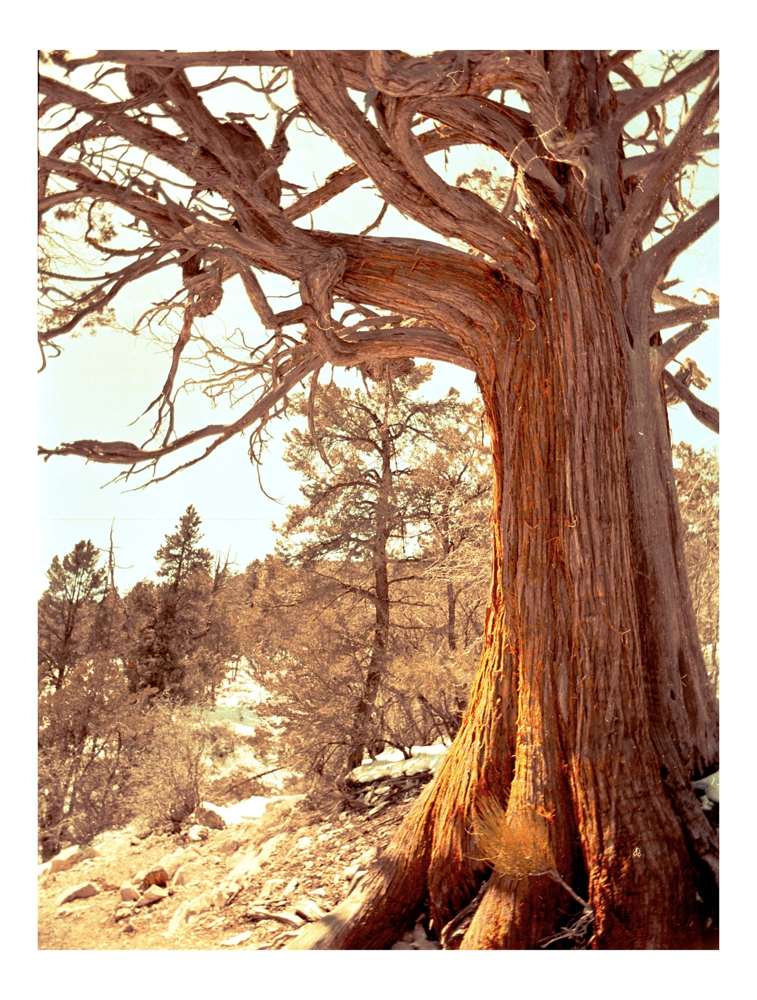
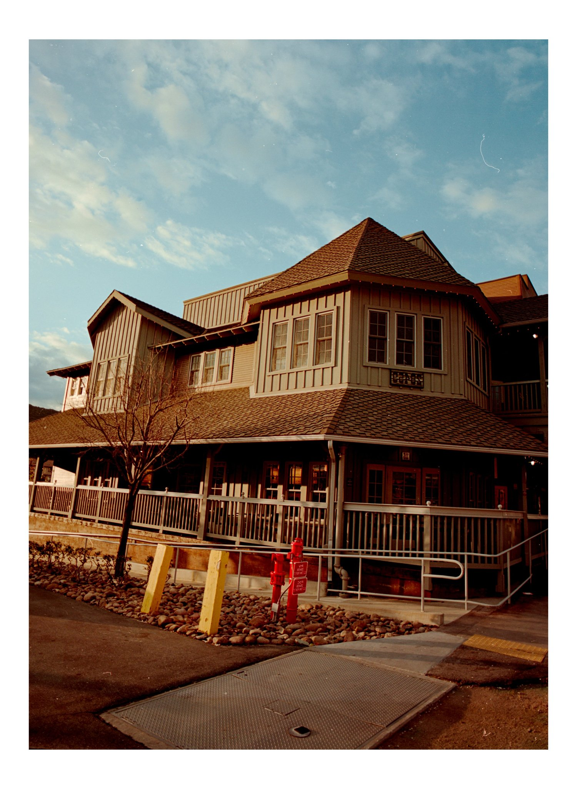
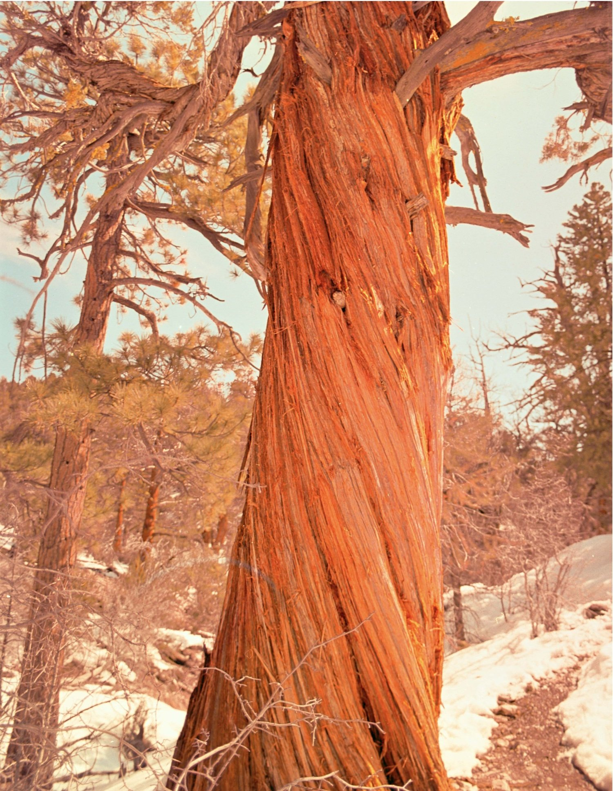
02
BLack & WHite
Inspired by grit and texture.
It reflects beautifully in the real world.
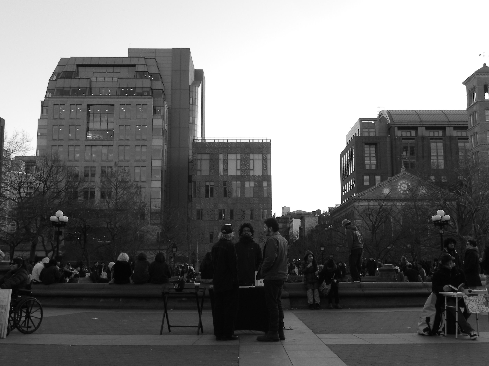
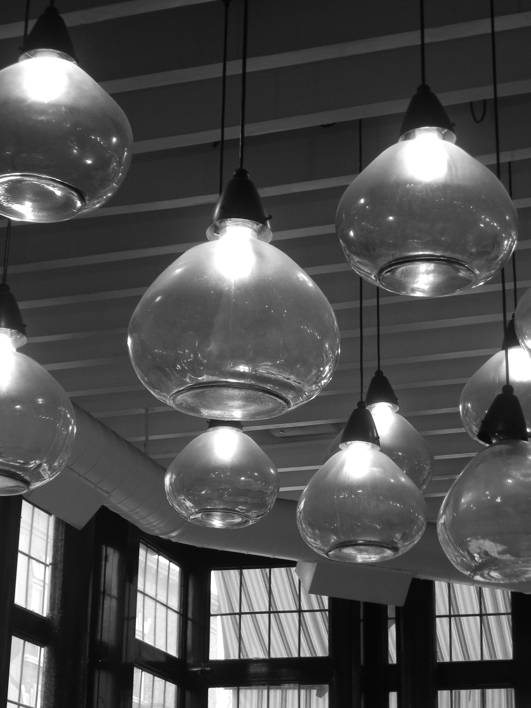
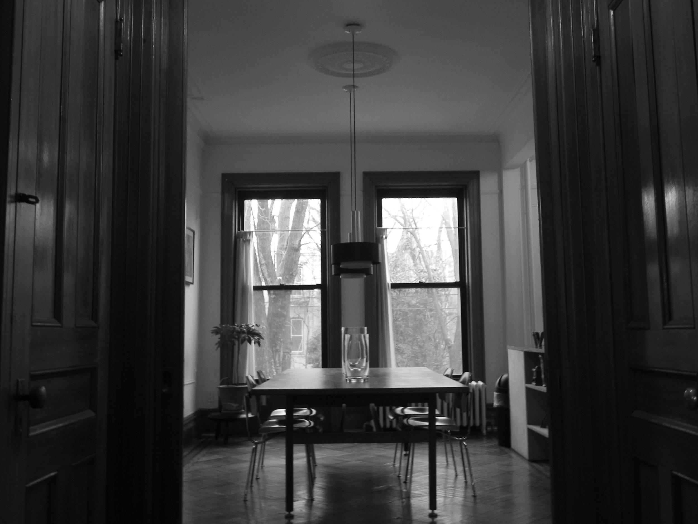
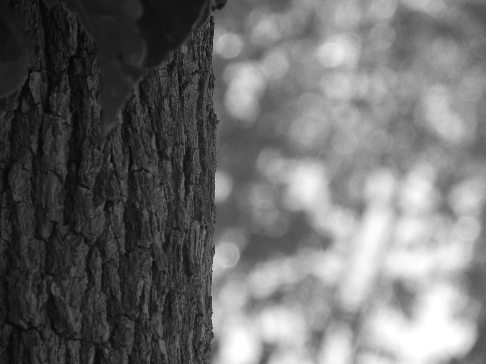
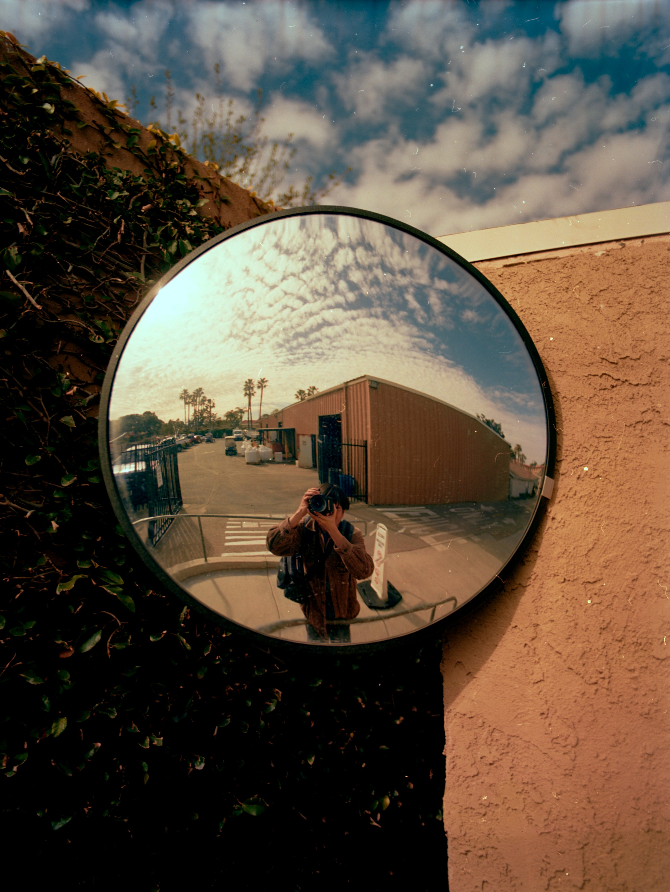
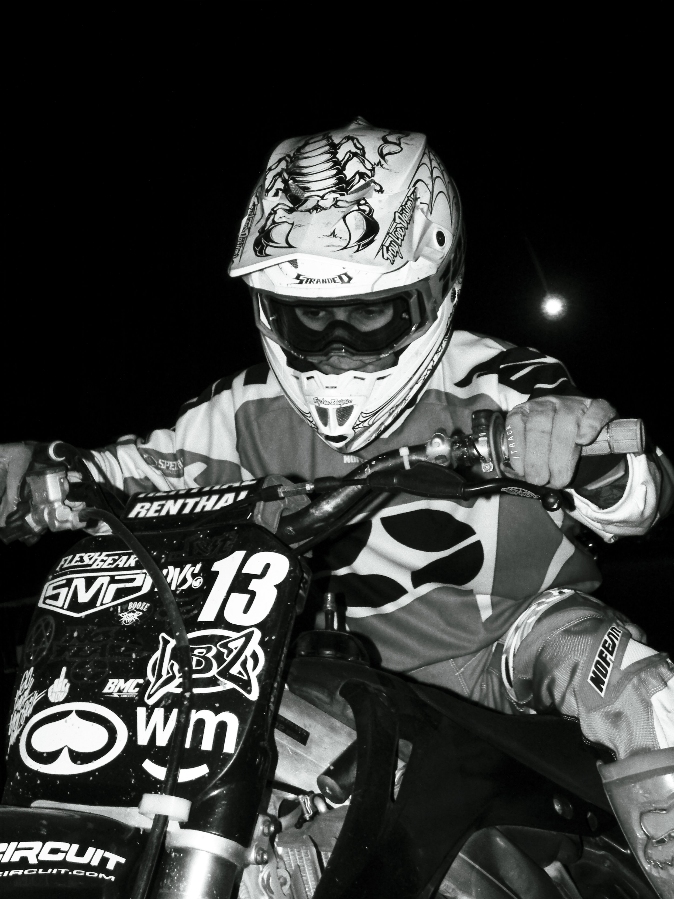
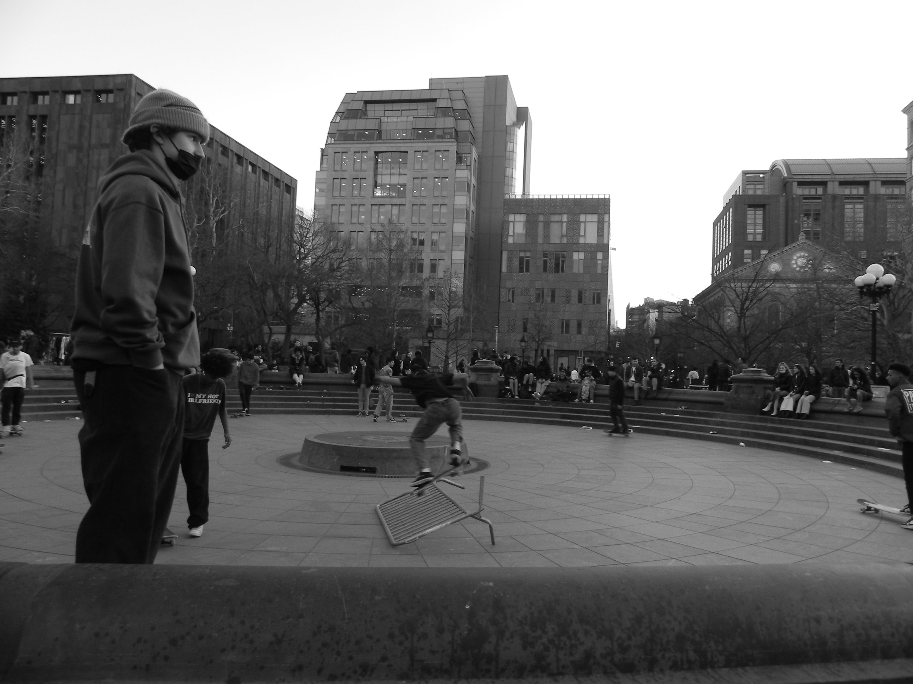
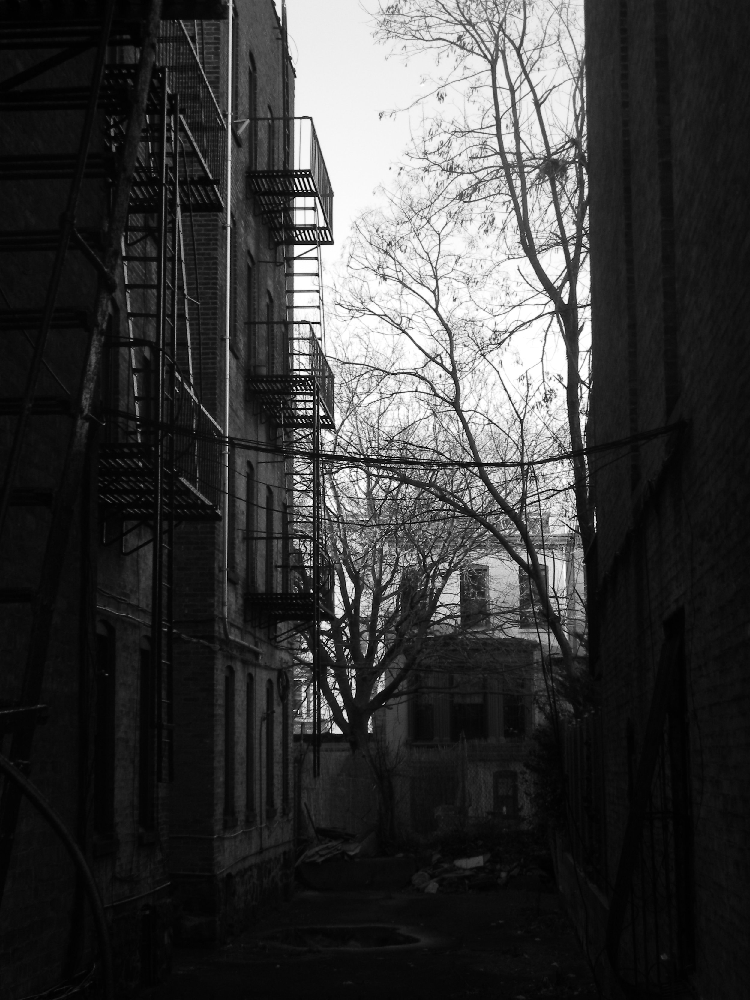
03 / ARTistHi, my name is
Hi, my name is
Christian.
I’m a filmmaker, photographer, and visual storyteller based in Southern California—capturing people, places, and the feeling between moments from my point of view.
Professional profile